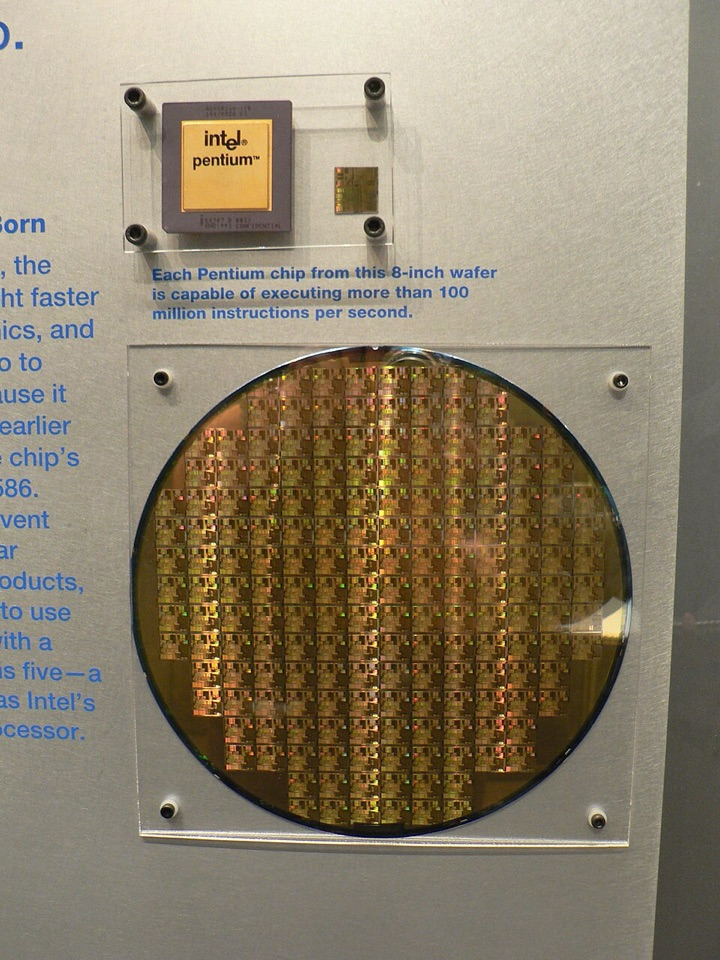

This is an educational explainer, not investment advice. Margins are each company's latest reported quarter as of publication and will change with the next earnings season. Where a figure is a company's own claim, we say so.
Key findings
- Global chip sales are forecast at about $1.51 trillion in 2026, up roughly 90% from under $800 billion in 2025.
- The classic "smile curve" says making things earns the least. In AI chips, the manufacturer in the middle, TSMC, keeps about 66 cents of each dollar in gross profit.
- Memory maker SK hynix went from 47 to 80 cents of operating profit per dollar in a year, and says the shortage lasts until 2030.
- The real low point is assembly: Foxconn keeps about 6 cents while building over 40% of AI servers, by its chairman's count.
- Margin follows scarcity, not position on the chain.
Part 1Why everyone wants chips
This year, the world will buy about $1.5 trillion worth of semiconductors. Last year it bought less than $800 billion. That is almost double, in a single year, according to the industry's own forecasters.

The reason is artificial intelligence. Every AI model is trained and run on chips, racked by the thousand inside data centres. More users, bigger models and more companies building them all point the same way: more chips. And the best ones are sold out.
Memory alone is set to pass $800 billion, up about 250%. Nvidia's data-centre business made $89 billion in the single quarter that ended in July. So where does all that money go?
Part 2The smile curve
In the early 1990s, Stan Shih, the founder of the Taiwanese computer maker Acer, drew a curve. Line up every step of making a product, from the first idea to the final customer, and plot how much profit each step keeps.
The two ends are high. Ideas, brands and software are hard to copy. The middle is low: if you can build a factory, so can someone else. Drawn out, it looks like a smile, and for three decades it explained why designers and brands got rich while manufacturers fought over thin margins.
"If you can build a factory, so can someone else."The logic of the smile curve
Now let's walk it, for one AI chip. Scroll through the eight stops below; each dot lands at the share of every dollar that step keeps.
Part 4The 2026 curve
The textbook smile dips in the middle. The real 2026 curve does not. TSMC and SK hynix earn like idea companies because nobody can replace them quickly: a new fab takes years and tens of billions of dollars, and so does a new memory line. SK hynix says its long-term supply deals are booked into 2029.
The true low point sits further right, at packaging and assembly, where adding capacity is easier and customers have more choices.
| Stop | Company | Kept |
|---|
Margin follows scarcity, not position.
Part 5The takeaway
So who keeps the money? Not whoever is first or last in line. Whoever the line can't do without. In 2026 that means ASML, TSMC and SK hynix as much as the designers at the top of the curve.
Next time a chip stock jumps, ask two things.
Where is it on the curve?
And can anyone replace it?
NotesSources
Each number and where it comes from. Several will change with the next earnings season; Nvidia reports its next quarter shortly after publication.
- Market size, $1.51T in 2026, +90%, memory above $800B: WSTS Spring 2026 forecast via TelecomLead; 2025 sales of $795.6B: Hedge Fund Alpha
- Nvidia, $89.0B data-centre revenue, quarter ended July 2026: StorageNewsletter / Nvidia release; 75% gross margin: Tom's Hardware, Zacks
- Cadence, 88% non-GAAP gross margin, Q1 2026: Zacks; Cadence and Synopsys about 30% of EDA each: Nasdaq / MarketBeat
- ASML, 57.5% gross margin Q3 2026, supply short of demand in 2027–28: ASML Q3 2026 release (SEC 6-K), StorageNewsletter
- TSMC, 66.4% gross margin Q3 2026: TrendForce; 72.5% foundry share Q2 2026: Focus Taiwan
- SK hynix, 80% operating margin Q3 2026 vs 47% Q3 2025, shortage through 2030: Webull / SK hynix results, TechPowerUp
- ASE, 22.1% gross margin Q3 2026: Finviz / ASE release
- Foxconn, 6.18% gross margin Q1 2026: I-Connect007; over 40% of AI servers (chairman's claim): TVBS
- "72 chips in a rack" refers to Nvidia's NVL72 rack. The smile curve itself (Stan Shih, Acer, early 1990s) is general business history.
Educational only. Not investment advice. This is a living document and will be updated as companies report.